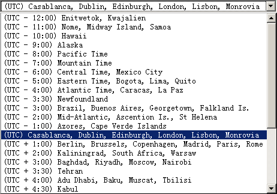

日期辅助函数
日期辅助函数的文件涵盖了一些用于辅助日期数组操作的函数。
装载本辅助函数
本辅助函数的装载通过如下代码完成:
$this->load->helper('date');
可用的函数如下:
now()
返回当前的 Unix 时间戳，根据你的config文件中"time reference"设定返回服务器当前时间或者GMT时间。如果你没有计划使用GMT时间(通常是你准备在站点中允许用户选择时区设置)，则此函数跟PHP中time()函数等同。
mdate()
This function is identical to PHPs date() function, except that it lets you use MySQL style date codes, where each code letter is preceded with a percent sign: %Y %m %d etc.
The benefit of doing dates this way is that you don't have to worry about escaping any characters that are not date codes, as you would normally have to do with the date() function. Example:
$datestring = "Year: %Y Month: %m Day: %d - %h:%i %a";
$time = time();
echo mdate($datestring, $time);
如果第二参数中不包含时间戳则使用当前时间。
standard_date()
允许你从一些标准格式生成日期字符串。例子：
$format = 'DATE_RFC822';
$time = time();
echo standard_date($format, $time);
第一个参数必须包含格式，第二个参数必须使用unix时间戳。
支持格式:
| 常量 | 描述 | 例子 |
|---|---|---|
| DATE_ATOM | Atom | 2005-08-15T16:13:03+0000 |
| DATE_COOKIE | HTTP Cookies | Sun, 14 Aug 2005 16:13:03 UTC |
| DATE_ISO8601 | ISO-8601 | 2005-08-14T16:13:03+0000 |
| DATE_RFC822 | RFC 822 | Sun, 14 Aug 2005 16:13:03 UTC |
| DATE_RFC850 | RFC 850 | Sunday, 14-Aug-05 16:13:03 UTC |
| DATE_RFC1036 | RFC 1036 | Sunday, 14-Aug-05 16:13:03 UTC |
| DATE_RFC1123 | RFC 1123 | Sun, 14 Aug 2005 16:13:03 UTC |
| DATE_RFC2822 | RFC 2822 | Sun, 14 Aug 2005 16:13:03 +0000 |
| DATE_RSS | RSS | Sun, 14 Aug 2005 16:13:03 UTC |
| DATE_W3C | World Wide Web Consortium | 2005-08-14T16:13:03+0000 |
local_to_gmt()
将unix时间戳转换为GMT。例子:
$now = time();
$gmt = local_to_gmt($now);
gmt_to_local()
输入一个GMT的unix时间戳，根据时区、夏时制转换为本地时间戳。例子：
$timestamp = '1140153693';
$timezone = 'UM8';
$daylight_saving = TRUE;
echo gmt_to_local($timestamp, $timezone, $daylight_saving);
注意：时区列表请参考本页末。
mysql_to_unix()
将MySQL时间戳转换为unix时间戳。例子：
$mysql = '20061124092345';
$unix = mysql_to_unix($mysql);
unix_to_human()
将unix时间戳转为如下人类可阅读格式：
YYYY-MM-DD HH:MM:SS AM/PM
本函数可用于需要作为表单提交的地方。
时间可以设置为含或者不含秒数，而且可以设为欧洲或美国格式。如果只有时间戳，则格式化为不含秒数的美国格式。例子：
$now = time();
echo unix_to_human($now); // U.S. time, no seconds
echo unix_to_human($now, TRUE, 'us'); // U.S. time with seconds
echo unix_to_human($now, TRUE, 'eu'); // Euro time with seconds
human_to_unix()
The opposite of the above function. Takes a "human" time as input and returns it as Unix. This function is useful if you accept "human" formatted dates submitted via a form. Returns FALSE (boolean) if the date string passed to it is not formatted as indicated above. Example:
$now = time();
$human = unix_to_human($now);
$unix = human_to_unix($human);
timespan()
格式化unix时间戳使其看起来像这样：
1 Year, 10 Months, 2 Weeks, 5 Days, 10 Hours, 16 Minutes
第一参数必须是unix时间戳，第二个参数是一个大于第一参数的时间戳。如果第二参数空缺，则使用当前时间。The most common purpose for this function is to show how much time has elapsed from some point in time in the past to now. Example:
$post_date = '1079621429';
$now = time();
echo timespan($post_date, $now);
Note:由本函数生成的文字可以在以下语言文件中找到： language/<your_lang>/date_lang.php
days_in_month()
对给出的年月值返回天数。Takes leap years into account. Example:
echo days_in_month(06, 2005);
如果省略第二参数则使用当前年。
timezones()
根据给定的时区参考(有效时区列表请参见下面的“时区参考”)返回跟UTC的相差值。
echo timezones('UM5');
本函数最有用是在使用timezone_menu()函数时.
timezone_menu()
生成一个时区下拉，像这样：
This menu is useful if you run a membership site in which your users are allowed to set their local timezone value.
The first parameter lets you set the "selected" state of the menu. For example, to set Pacific time as the default you will do this:
echo timezone_menu('UM8');
Please see the timezone reference below to see the values of this menu.
The second parameter lets you set a CSS class name for the menu.
Note: The text contained in the menu is found in the following language file: language/<your_lang>/date_lang.php
时区参考
The following table indicates each timezone and its location.
| Time Zone | Location |
|---|---|
| UM12 | (UTC - 12:00) Enitwetok, Kwajalien |
| UM11 | (UTC - 11:00) Nome, Midway Island, Samoa |
| UM10 | (UTC - 10:00) Hawaii |
| UM9 | (UTC - 9:00) Alaska |
| UM8 | (UTC - 8:00) Pacific Time |
| UM7 | (UTC - 7:00) Mountain Time |
| UM6 | (UTC - 6:00) Central Time, Mexico City |
| UM5 | (UTC - 5:00) Eastern Time, Bogota, Lima, Quito |
| UM4 | (UTC - 4:00) Atlantic Time, Caracas, La Paz |
| UM25 | (UTC - 3:30) Newfoundland |
| UM3 | (UTC - 3:00) Brazil, Buenos Aires, Georgetown, Falkland Is. |
| UM2 | (UTC - 2:00) Mid-Atlantic, Ascention Is., St Helena |
| UM1 | (UTC - 1:00) Azores, Cape Verde Islands |
| UTC | (UTC) Casablanca, Dublin, Edinburgh, London, Lisbon, Monrovia |
| UP1 | (UTC + 1:00) Berlin, Brussels, Copenhagen, Madrid, Paris, Rome |
| UP2 | (UTC + 2:00) Kaliningrad, South Africa, Warsaw |
| UP3 | (UTC + 3:00) Baghdad, Riyadh, Moscow, Nairobi |
| UP25 | (UTC + 3:30) Tehran |
| UP4 | (UTC + 4:00) Adu Dhabi, Baku, Muscat, Tbilisi |
| UP35 | (UTC + 4:30) Kabul |
| UP5 | (UTC + 5:00) Islamabad, Karachi, Tashkent |
| UP45 | (UTC + 5:30) Bombay, Calcutta, Madras, New Delhi |
| UP6 | (UTC + 6:00) Almaty, Colomba, Dhakra |
| UP7 | (UTC + 7:00) Bangkok, Hanoi, Jakarta |
| UP8 | (UTC + 8:00) Beijing, Hong Kong, Perth, Singapore, Taipei |
| UP9 | (UTC + 9:00) Osaka, Sapporo, Seoul, Tokyo, Yakutsk |
| UP85 | (UTC + 9:30) Adelaide, Darwin |
| UP10 | (UTC + 10:00) Melbourne, Papua New Guinea, Sydney, Vladivostok |
| UP11 | (UTC + 11:00) Magadan, New Caledonia, Solomon Islands |
| UP12 | (UTC + 12:00) Auckland, Wellington, Fiji, Marshall Island |